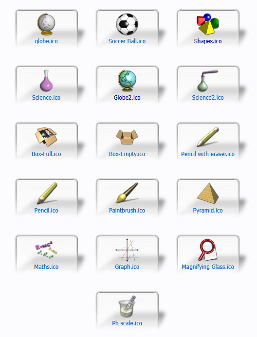
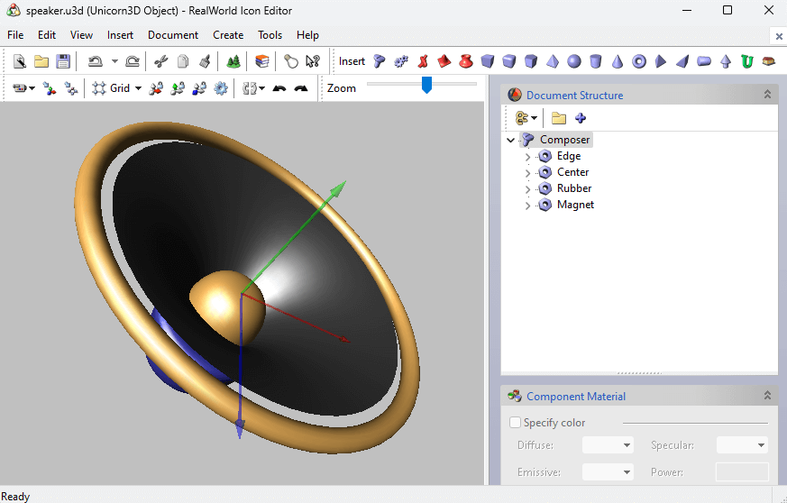

<html lang="en"></html>
 <head>
  <meta charset="UTF-8" />
  <meta name="viewport" content="width=device-width, initial-scale=1.0" />
  <meta name="wordcount" content="701">
  <meta name="postdate" content="2025-02-12">
  <title>&#10028; realworld graphics &#10028;</title>
  <link rel="icon" type="image/x-icon" href="img/pxflower3.png">
  <link rel="stylesheet" type="text/css" href="../style.css" />
  <link rel="stylesheet" type="text/css" href="blog_style.css" />
  <script src="https://kit.fontawesome.com/85bfb0bd19.js" crossorigin="anonymous"></script>
 </head>
 <!-- Page template: https://repth.neocities.org/theme -->
 <body>
   <button onclick="topFunction()" id="to_top" title="Go to top"><span style="font-size:24px;">&#8593;</span>&nbsp;&nbsp;to top</button>
  <div id="container">

   <div class="logo">
      
   </div>

   <div id="box">
    <div id="contentboxes">
	<div id="gridbg">
     <main>
      <!-- WEBLOG BOX -->
      <div>
       <h2>Realworld Graphics (aka a resource for custom cursors and old desktop graphics)</h2>
       <p class="blogdetail"><time datetime=""></time><span id="wordcount"> • word count: ...</span></p>

       <a href="../weblog.html"><i class="fa-solid fa-circle-arrow-left" style="color:#f2cf5c;text-shadow:0 0 10px rgba(243, 247, 118, 0.2);"></i> go back </a>

       <div style="display:inline;float:right;width:fit-content;">
         <script src="../fontchanger.js"></script>
       </div>
         
       <hr />
       <article>
          <p><a href="http://www.rw-designer.com/">(tl;dr: i think this site is neat)</a></p>
          <p>A little while ago I stumbled across a site called Realworld Graphics. And then I kept digging. I talked a bit about what I found on the site over on Spacehey, and some people seemed to find it interesting so I figure fuck it I'll talk about it here too. I haven't seen anyone mention it when recommending old web graphic resources, so I'm gonna give a brief overview of some of what I've found on the site (and a few of my own opinions 'cause I love to yap)</p>
          
          <div class="pic left" style="width:304px;">
            <h2 class="subheader">realworld.ico</h2>
            <figure></figure>
            <figcaption style="width:300px;">why settle for low-poly when you can attain uncanny glossy smoothness?</figcaption>
        </div>
          <h3>The Gallery</h3>
          <p>First off: this site has a <i>ton</i> of <a href="http://www.rw-designer.com/cursor-library/set-0">user-submitted cursors</a>. Seriously, if you've been looking for a cursor for your profile but haven't found one that's just right, you should try looking here.</p>
          <p>There's also a collection of custom <a href="http://www.rw-designer.com/icon-library/set-0">desktop icons</a>, and a lot of them look like they were lifted straight from the 90s and 00s. It might be worth checking out if you're looking to customize your desktop, or if you're looking for oldschool fruitiger aero style graphics.</p>
          <p>Both the cursor and icon galleries receive a steady stream of new user-submitted graphics, which imo is pretty impressive considering this site has been around since 2005. <br/></p>
          <h3>In-Browser Tools</h3>
          <p>The site also has a handful of web browser tools for making your own graphics. A lot of them seem pretty niche, but I saw a couple that seem useful:</p>
          <ul>
            <li><a href="http://www.rw-designer.com/online_icon_maker.php">the favicon editor</a>: a simple drawing tool for creating downloadable 16x16 pixel icons (you can also convert your own images into favicon, but don't expect them to be very legible)</li>
            <li><a href="http://www.rw-designer.com/online-cursor-editor">the cursor creator</a>: a drawing tool for making cursors that you can download and use. you can't convert your own images into cursors, but it does provide some basic templates for you to work off of</li>
          </ul>
          <h3>Downloadable Software</h3>
          <p>I've only tried out a couple of the site's downloadable programs. I'll give my honest thoughts on them, but you'll have to test the others yourself. Just keep in mind that some of them are completely free, while others are only a 30-day trial (the site isn't super upfront about this :/ )</p>
          <ul>
            <li><a href="http://www.rw-designer.com/online-cursor-editor">the cursor software</a></li>
          </ul>
          <p>Basically a more in-depth version of the in-browser cursor maker. It has a drawing tool for designing cursors, and also lets you turn images into cursors, edit preexisting cursors, and make animated cursors.</p>
          <p>I find the software a bit confusing at times. RealWorld does have a few tutorials and a semi-active support forum, but if you wanna do anything too complicated, you'll mostly have to figure things out on your own. I don't think it's incredibly hard to use, but there is a learning curve that might make it more trouble than it's worth.</p>
          <p>But it is 100% free, so I can't complain too much.</p>
          <div class="pic right" style="width:304px;">
            <h2 class="subheader">speaker.u3d</h2>
            <figure></figure>
        </div>
          <ul>
            <li><a href="http://www.rw-designer.com/3D_icon_editor.php">the icon editor</a></li>
          </ul>
          <p>This comes with a 30-day free trial, with the main software costing $47 USD. You can use it to convert images to .ico, .icns, and.bin files (the common file formats for Windows & Mac icons).</p>
          <p>It also comes with its own 3D modelling software made specifically for creating desktop icons. The graphics made from this software have a really cool retro style to them, which might make it useful for people who make old web / fruitiger aero style art.</p>
          <p>Compared to other 3D software, this is pretty rudimentary. A lot of the tools I use regularly on more modern software either don't exist here, or require learning an unfamiliar UI. RealWorld has tutlorials and a support forum, but you'll mostly have to figure things out on your own and adjust to working within its limits.</p>
          <p>It's hard to recommend the 3D software when Blender is free, but it might someone who wants their retro graphics to be as authentic as possible</p>
          <p>(you can also download the 3D software on its own for free, but it doesn't let you render anything)</p>
          <h3>Also!!!</h3>
          <p>This site is pretty old, and I'm not sure how well-maintained it is. There's a fairly active community on it, but I found a lot of dead links during my extremely neurodivergent deep dive. Sooo download anything from this site at your own risk ig</p>
        </article>
	   	   <hr />
       <a href="../weblog.html"><i class="fa-solid fa-circle-arrow-left" style="color:#f2cf5c;text-shadow:0 0 10px rgba(243, 247, 118, 0.2);padding-bottom:30px;"></i> go back </a>
      <!-- END CONTENT -->
     </main>
	 </div>
    </div>
   </div>
   <script>
      // Get the button
      let mybutton = document.getElementById("to_top");
      
      // When the user scrolls down 20px from the top of the document, show the button
      window.onscroll = function() {scrollFunction()};
      
      function scrollFunction() {
        if (document.body.scrollTop > 20 || document.documentElement.scrollTop > 20) {
        mybutton.style.display = "block";
        } else {
        mybutton.style.display = "none";
        }
      }
      
      // When the user clicks on the button, scroll to the top of the document
      function topFunction() {
        document.body.scrollTop = 0;
        document.documentElement.scrollTop = 0;
      }
      </script>
<script>
  (function() {
    // --- Word count ---
    const wcMeta = document.querySelector('meta[name="wordcount"]');
    const wcSpan = document.getElementById('wordcount');
    if (wcMeta && wcSpan) {
      wcSpan.textContent = ` • word count: ${wcMeta.content}`;
    }

    // --- Post date ---
    const dateMeta = document.querySelector('meta[name="postdate"]');
    const timeEl = document.querySelector('time[datetime]');

    if (dateMeta && timeEl) {
      timeEl.setAttribute('datetime', dateMeta.content);

      const [year, month, day] = dateMeta.content.split('-').map(Number);

      const dateObj = new Date(year, month - 1, day);

      const options = { year: 'numeric', month: 'short', day: 'numeric' };
      let formatted = dateObj.toLocaleDateString('en-US', options);

      formatted = formatted.replace(/^[A-Z][a-z]{2}/, match => match.toLowerCase());

      timeEl.textContent = formatted;
    }
  })();
</script>
 </body>
</html>